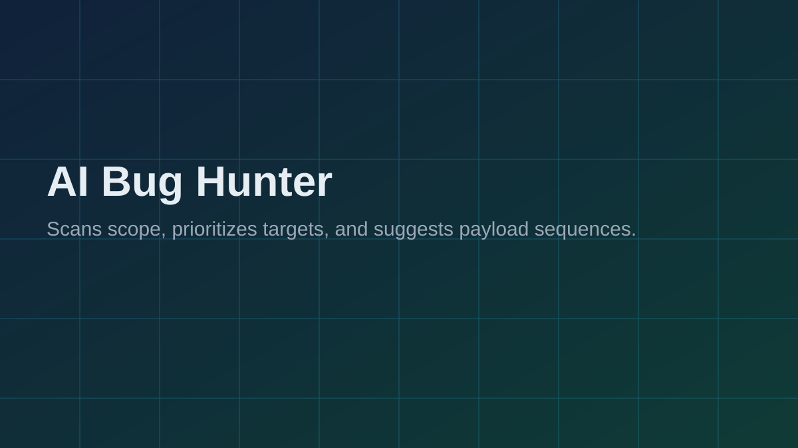
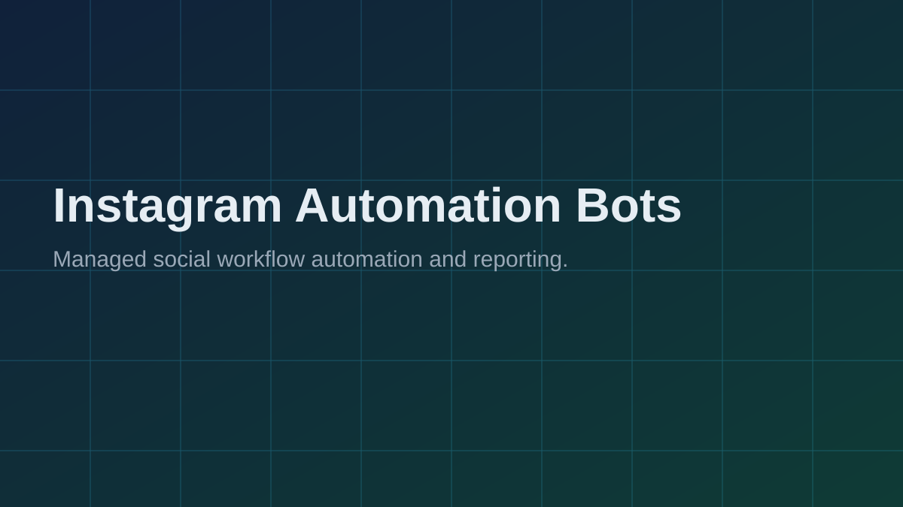
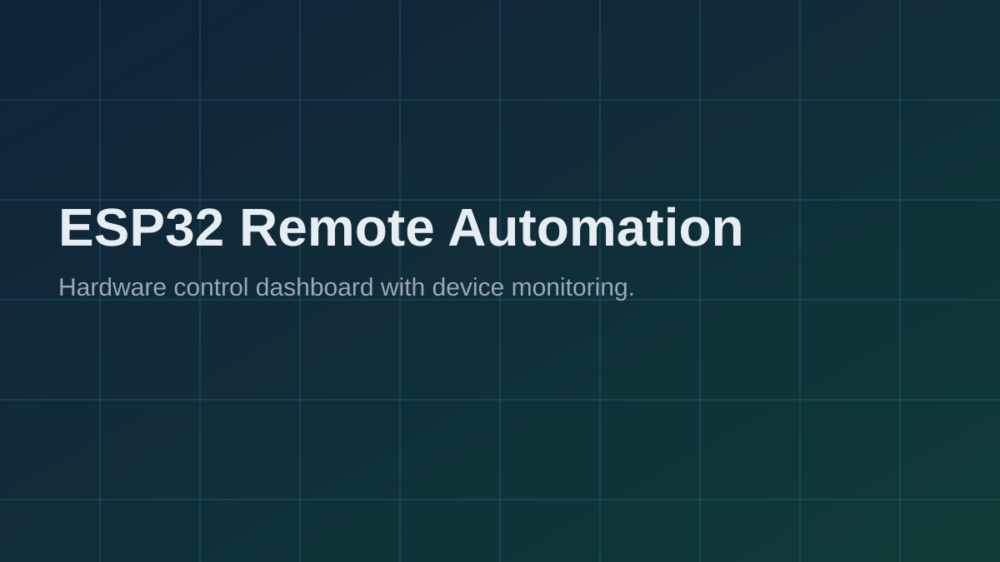
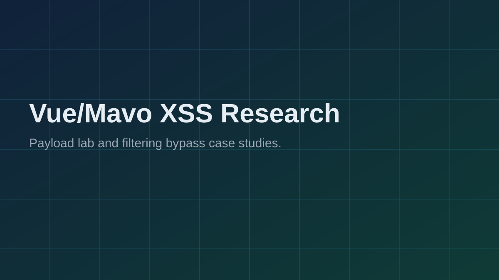

AI Bug Hunter
Problem solved: manual payload discovery takes time. Built an assistant that ranks targets and suggests payload sequences for faster triage.
Tech: Python • LLM APIs • Prompt workflows

Problem solved: manual payload discovery takes time. Built an assistant that ranks targets and suggests payload sequences for faster triage.
Tech: Python • LLM APIs • Prompt workflows

Problem solved: fragmented recon data. Built an automated pipeline for host discovery, endpoint harvesting, and attack-surface scoring.
Tech: Python • APIs • Async workers

Problem solved: repetitive social workflows. Designed controlled bot automation for posting/monitoring tasks with reporting support.
Tech: Python • Selenium • APIs
Problem solved: manual moderation and commands. Delivered event-driven bots with robust command handlers and moderation flows.
Tech: Python • Discord.py • Asyncio
Problem solved: low-conversion static pages. Built responsive websites using Flask/Django concepts with clean UX and security-aware structure.
Tech: Flask • Django • HTML/CSS/JS

Problem solved: remote device control complexity. Built an embedded control platform with status monitoring and lightweight control interface.
Tech: ESP32 • MQTT/HTTP • Embedded C

Problem solved: hidden client-side injection vectors. Researched payload behavior and bypass techniques for modern front-end contexts.
Tech: JavaScript • Burp Suite • Browser security
Problem solved: difficult realtime protocol testing. Developed helper tools for auth checks, message mutation, and session state manipulation tests.
Tech: Python • WebSockets • Proxy tooling

Problem solved: limited reusable payload playbooks. Built a repeatable CSP/XSS lab and documented exploit chains and mitigation-ready writeups.
Tech: CSP • XSS • Reporting